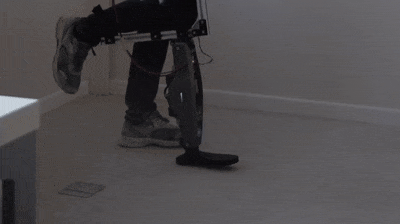
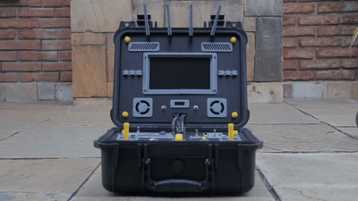
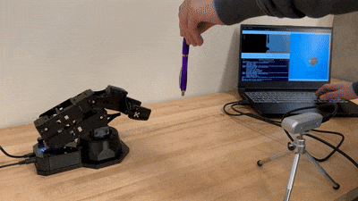
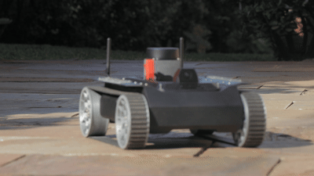
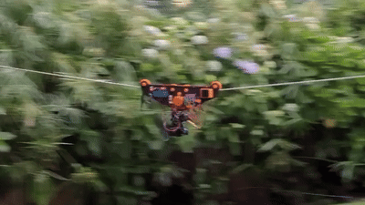

Featured Projects

A robot that searches for targets and blasts them down!
Nerfbot

Affordable knee and ankle prosthesis prototype.
Bionic prosthesis prototype

Control all the things robotics.
Ground Control Station

Pincher grabs pen using CV.
Give me your pen!

DIY tracked mobile base.
Tracked robotic platform

DIY cablecam with hobby components & tools.
Cablecam
Connect with me